{{ 'gameplay.intro' | translate }}
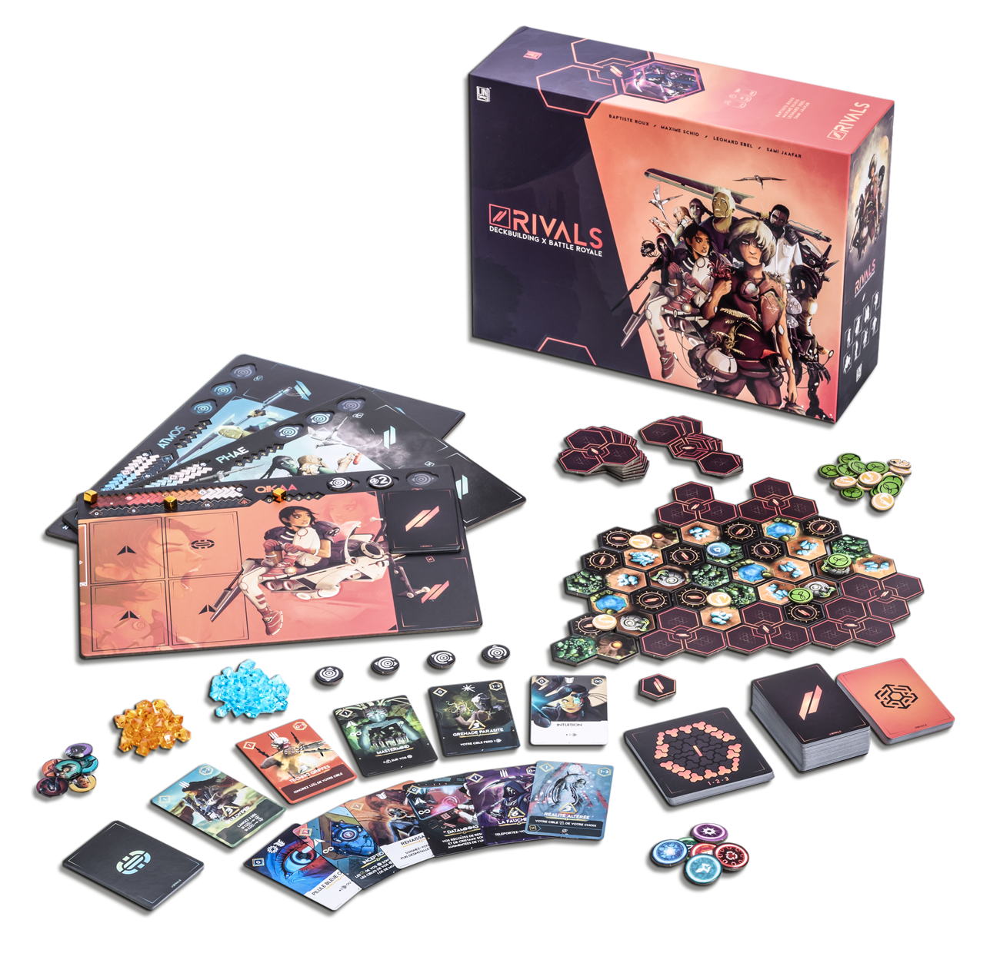
Les Ashaks sont des personnages qui ont des compétences spéciales et uniques. Vous incarnez l'un d'eux. Améliorez son deck d'armes, de tactiques et de compétences au fur et à mesure de la partie. Améliorez son anticipation et sa puissance, définissez sa tactique.
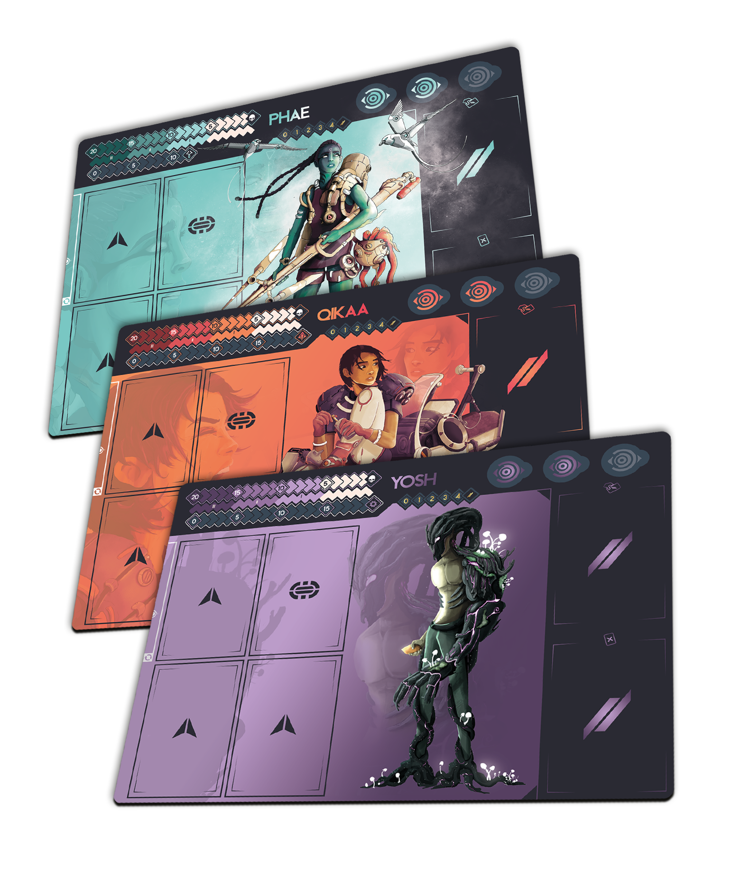
La Wildtech est une arène composée de 43 tuiles. Chaque tuile possède
des ressources.
Utilisez vos points d'actions pour scanner la Wildtech, vous déplacer
ou récolter des ressources et des cartes.
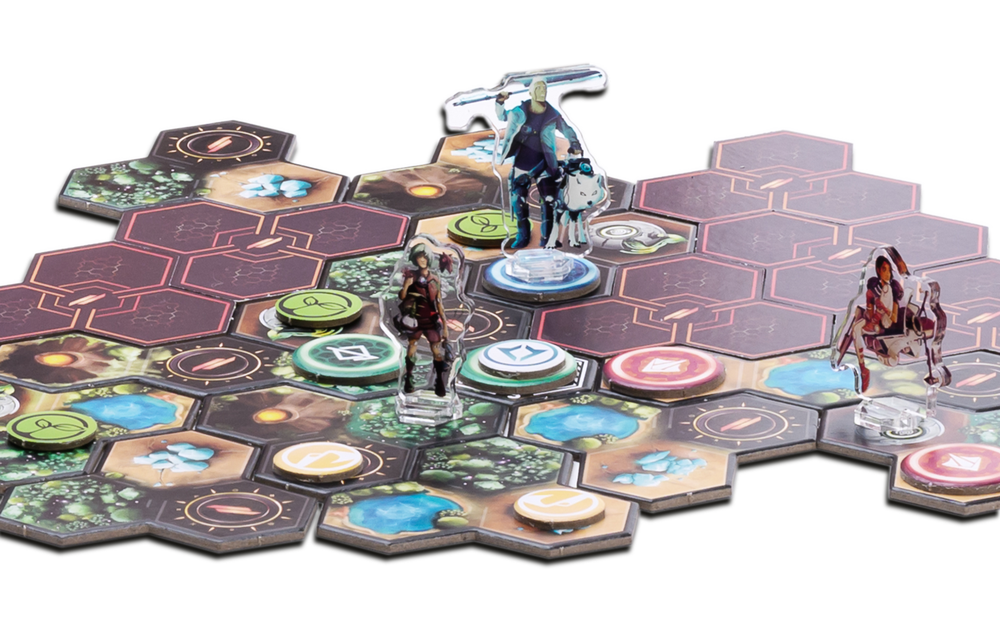
Usez de vos cartes pour attaquer vos adversaires, leur faire perdre des points de vie et augmenter votre jauge d'ultime.
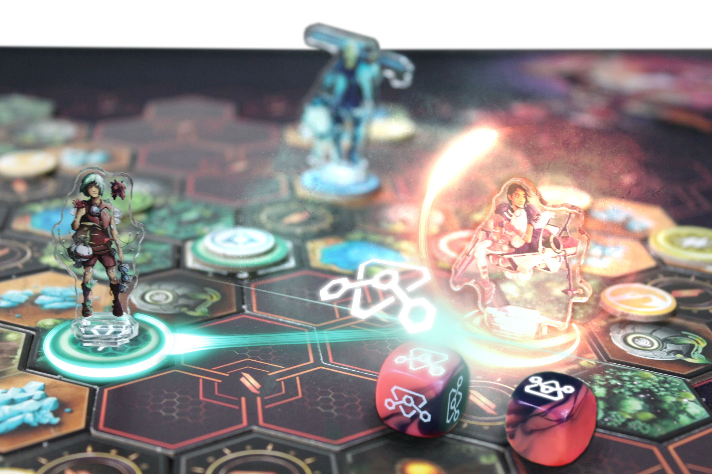
Obtenez 5 points de victoire ou soyez le dernier survivant sur la Wildtech. Pour obtenir des points de victoire: négociez des sponsors, récoltez des ressources ou tuez des ashaks.
Les tuiles de la Wildtech sont formées de 3 cases. Chaque case est une ressource différente, sauf les volcans et les lacs qui ne donnent rien.
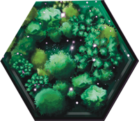
Case Forêt
Résine
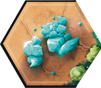
Case Cristal
Cristal
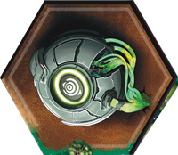
Case Anticipation
Jetons anticipation
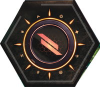
Case Interface
Cartes
La récolte vous coûte 1 point d'action et vous permet de récupérer toutes les ressources de la tuile.
Vous récupérez des ressources supplémentaires de la case où vous vous trouvez au moment de la récolte.
La tuile s'assèche une fois récoltée. Elle se regénère en 2 manches.
Clickez sur une des cases pour récolter les ressources
Vous attaquez vos adversaires en jouant des cartes attaque, elles sont divisées en 3 grands types :
Explosives
Les attaques explosives touchent la tuile entière et détruisent les boucliers.
Mentales
Les attaques mentales ignorent les lignes de vue mais ne
peuvent pas être boostées par des cartes mods.
Si vous défaussez une carte en jouant une mentale, vous
débloquez le bonus.
Physiques
Les attaques physiques sont modables et peuvent avoir plusieurs salves.
L'effet des cartes est toujours appliqué avant les dégâts, sauf si le texte indique le contraire.
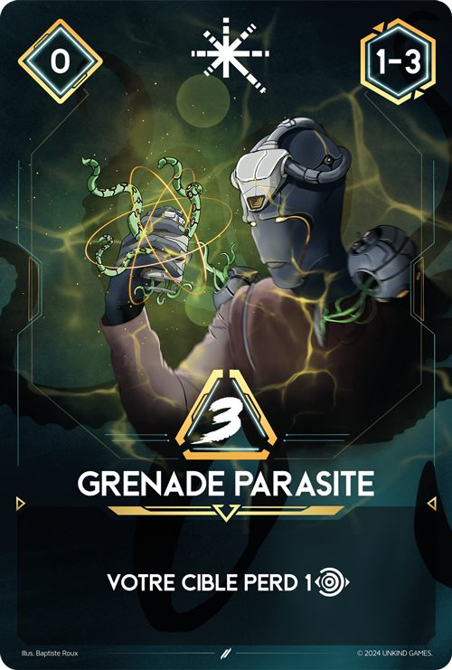
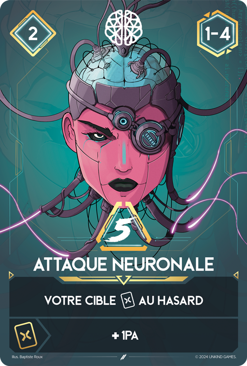
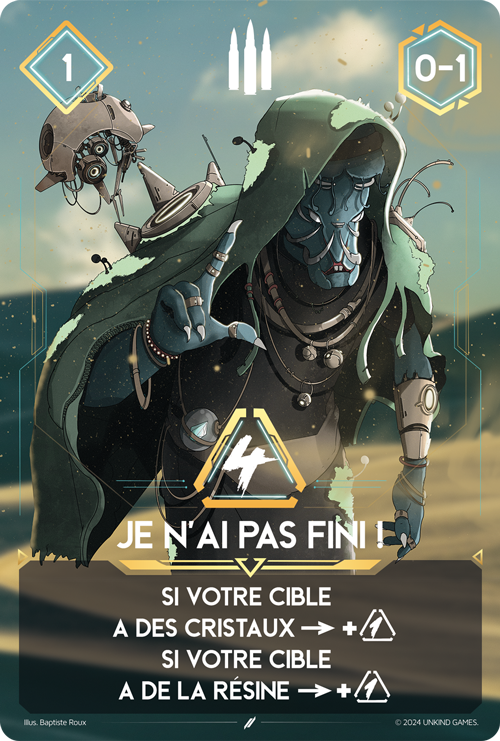
Toutes les attaques ont un coût en Point d'Action, une portée minimale et maximale et un nombre de dégât.
Coût
Le coût correspond au nombre de points d'action nécessaires pour utiliser la carte.
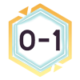
Portée
La portée correspond à la distance minimale et maximale entre vous et votre adversaire pour attaquer.
Dégâts
Les dégâts sont le nombre de points de vie que vous tentez de retirer à votre adversaire avec votre attaque.
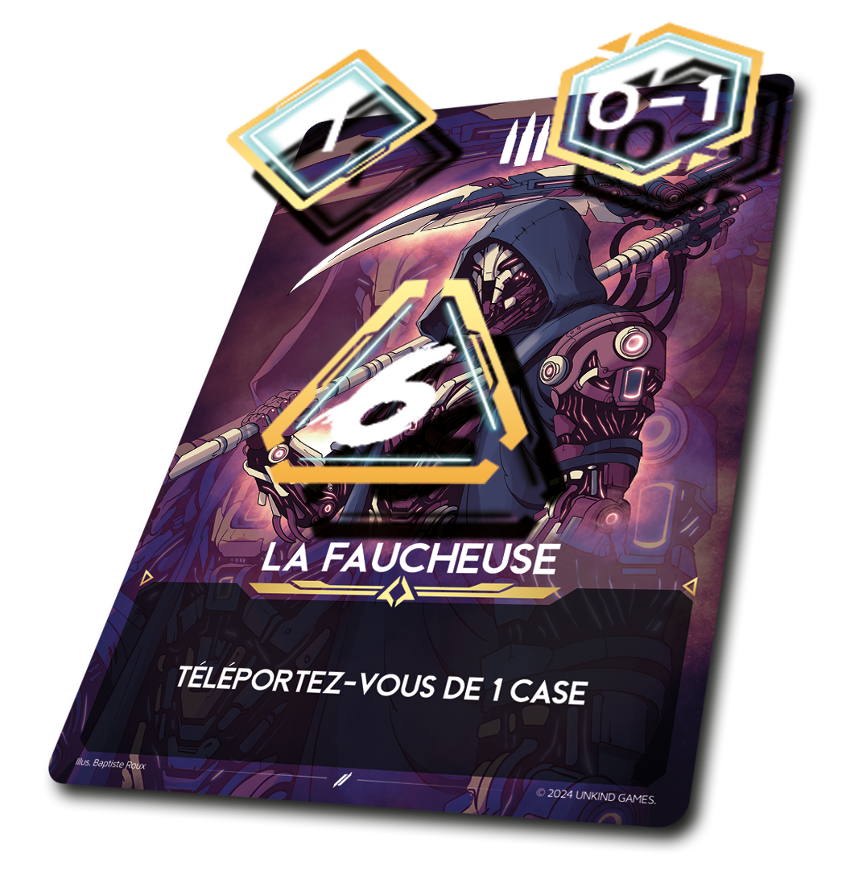
Vous pouvez attaquer lorsque c'est votre tour et autant de fois que vous le souhaitez à condition d'avoir suffisamment de points d'actions.
L'attaquant dépense les points d'actions nécessaires pour jouer sa carte.
Exemple ci-contre:
Gyaleis dépense ses 2 points d'action
pour jouer Plasma Speeder boostée par Munitions vampiriques.
Qikaa subit donc 3 dégâts 2 fois. Si
elle est blessée par l'attaque (c'est à dire: si après avoir
jeté ses dés d'esquive, elle perd des points de vie),
Gyaleis se regénérera de 3PV grâce à
son mod. De plus, si Qikaa perd au
total au moins 4PV, elle perdra de nouveau 2PV grâce à l'effet
de Plasma Speeder.
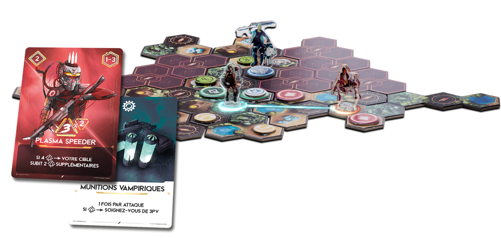
Le joueur attaqué peut défendre ses points de vie en lancant des dés d'esquive. Par défaut, un Ashak a 2 dés d'esquive. Il existe plusieurs façons d'augmenter ou réduire ce nombre :
Jetons Anticipation
L'utilisation d'un jeton d'Anticipation permet de débloquer 2 dés.
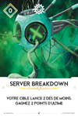
Cartes ou Guildes
Certaines cartes peuvent augmenter ou réduire le nombre de dés d'esquive.
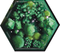
Case forêt
Un joueur présent sur une case forêt peut lancer un dé supplémentaire.